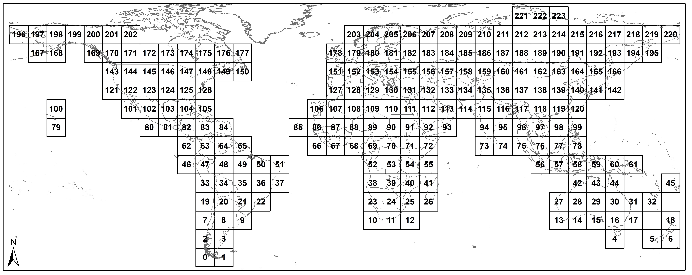

NDUI datasets download link:
Account:714940417@qq.com Password:dfin5=Ed
Note:If you have a private account of Google earth engine,you can use it first. This account is a public account,when you use,please don't change the Password.
Code availability
In the spirit to reproducibility, we uploaded all the NDUI datasets to Google Assets (2000-2005: users/714940417, 2006-2010: users/bameshannon7, and 2010-2013: users/Qinglinglab), which can then be directly accessed and analyzed on the GEE platform.
The GEE Code for calling the NDUI data is as the following:
var img_name = ee.Image(“users/714940417/Year_GridID”) ;
Example: var img_name = ee.Image(“users/714940417/2000_125”); This will call the Tile 125 of year 2000 and assign it to the variable img_name.
The entire global land surface with valid NDUI data is divided into a total of 224 tiles.
 Figure. The NDUI worldwide reference system map. |